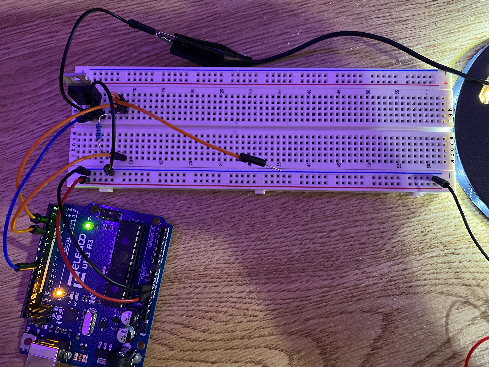
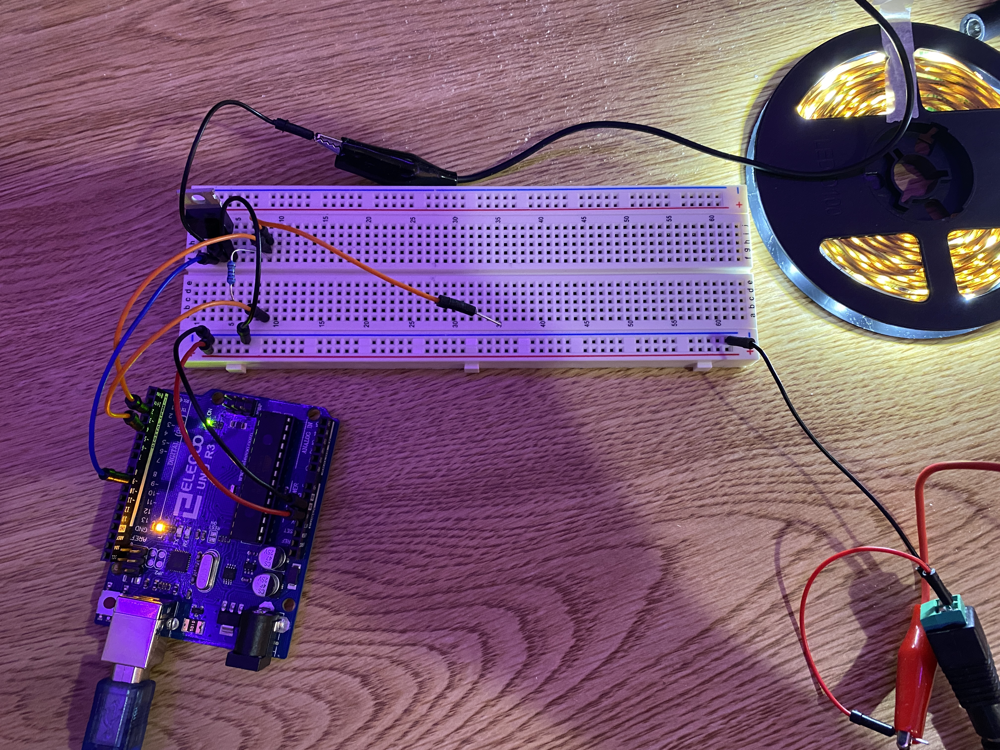
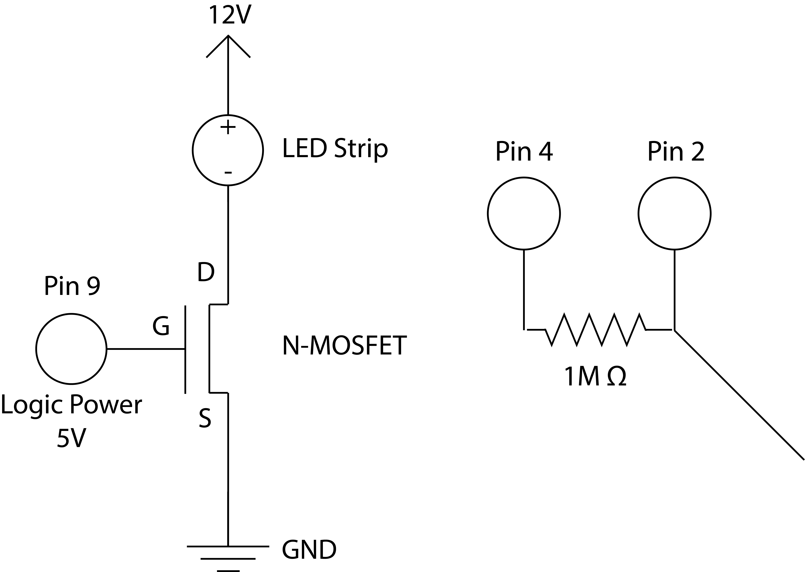
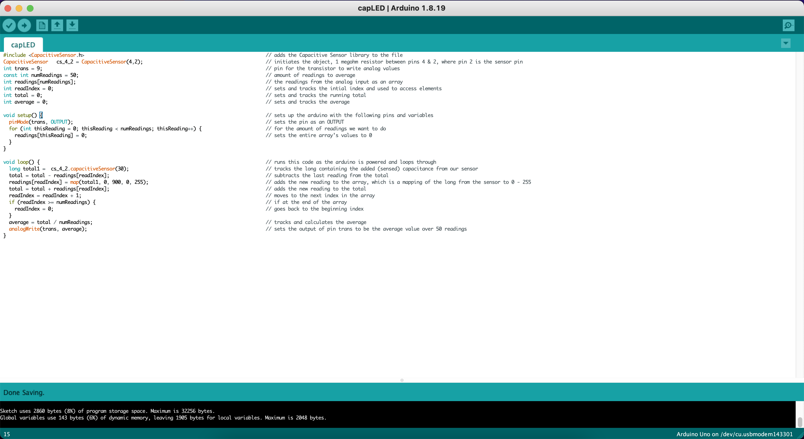

Here is an image of my circuit.

Here is another image of my circuit.

Here is an gif of my circuit working. The LED strip's brightness will change depending on how much resistance the capacitive sensor notices/ when I touch it.

By using an external power source that provided 12 volts, I was able to power an LED strip. With the help of an N MOSFET transistor with a drain current 32A and Arduino board I was able to control how much voltage/current flowed between the source and the drain. Since the LED strips have 3 white LEDs in series, we know in an LED strip section, there will be 3 * 3.3 = 9.9 V drop since white LEDs have a voltage drop of ~3.3 V. Since the power supply is 12 V, there is a 12 - 9.9 = ~2.1 V drop across resistors in series with the three LEDs. The resistors are marked 181, so 18 * 10 = 180 ohms. Since 2.1 = I * 180, 2.1/180 = 0.01166A, 11.66mA across one section of the strip. There are 100 sections, which suggests 100 * 11.66 = ~1.17 A across the entire load and circuit (before the transistor). On the right circuit, since I use a 1 megohm resistor for absolute touch, and 12 = I * 1000000, 12/1000000 = 0.000012A, .012mA is across the entire right circuit before it breaks off into the sensor and sensor pin. Using the CapacitiveSensor library, I used pins 4 and 2 to sense touch/ resistance.

Here is my code with comments explaining how it works. I use an array to average the values of the capacitive sensor since it is very finicky and sensitive. The array is populated with the values from the sensor and the loops takes an average value of all the values in the array. I use the CapacitiveSensor library.
#include <CapacitiveSensor.h> // adds the Capacitive Sensor library to the file
CapacitiveSensor cs_4_2 = CapacitiveSensor(4,2); // initiates the object, 1 megohm resistor between pins 4 & 2, where pin 2 is the sensor pin
int trans = 9; // pin for the transistor to write analog values
const int numReadings = 50; // amount of readings to average
int readings[numReadings]; // the readings from the analog input as an array
int readIndex = 0; // sets and tracks the intial index and used to access elements
int total = 0; // sets and tracks the running total
int average = 0; // sets and tracks the average
void setup() { // sets up the arduino with the following pins and variables
pinMode(trans, OUTPUT); // sets the pin as an OUTPUT
for (int thisReading = 0; thisReading < numReadings; thisReading++) { // for the amount of readings we want to do
readings[thisReading] = 0; // sets the entire array's values to 0
}
}
void loop() { // runs this code as the Arduino is powered and loops through
long total1 = cs_4_2.capacitiveSensor(30); // tracks the long containing the added (sensed) capacitance from our sensor
total = total - readings[readIndex]; // subtracts the last reading from the total
readings[readIndex] = map(total1, 0, 900, 0, 255); // adds the new reading to the array, which is a mapping of the long from the sensor to 0 - 255
total = total + readings[readIndex]; // adds the new reading to the total
readIndex = readIndex + 1; // moves to the next index in the array
if (readIndex >= numReadings) { // if at the end of the array
readIndex = 0; // goes back to the beginning index
}
average = total / numReadings; // tracks and calculates the average
analogWrite(trans, average); // sets the output of pin trans to be the average value over 50 readings
}